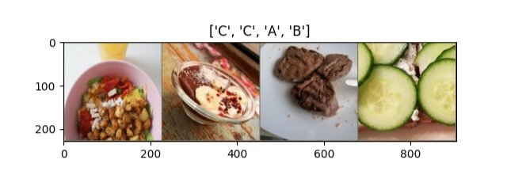

I used transfer learning to predict what my friends are eating. The code is on GitHub.
The long version of the story goes like this: Some of my friends and I have this silly WhatsApp group where we share photos of what we eat – all of what we eat. From breakfast, over lunch until dinner, including all tiny snacks during the day. It’s more of a fun thing, not a serious endeavour, but it made me a bit more conscious about what I eat.
Since we have been doing this for almost a year now, we have built up a fairly reasonable record of our eating patterns. We also started to develop a sense for the habits of the others. Without looking at who sent the photo, we can now almost immediately identify whose food this probably was.
So I started wondering whether this was enough data to predict who was eating what using a machine learning model. Our chat contains 8137 messages, of which 4201 are photos.
I decided to give it a shot. The task is a simple classification problem: Given a photo, find the friend who posted it. I exported the files from WhatsApp, extracted the labels and some date information using pandas and made some quality checks.

Architecture
Unfortunately, I didn’t have enough data to train a model from scratch, so I went ahead and used transfer learning. I fired up PyTorch and grabbed myself a ResNet (from Deep Residual Learning for Image Recognition) that’s pre-trained on ImageNet. Then I attached a linear layer for my classification targets to the final fully connected layer of the ResNet.
I was then faced with the decision of how to train my model: Should I fine-tune the ResNet’s weights or should I freeze them and only train my linear classifier on top of the ResNet codes? I had a small dataset that is, however, also quite different from ImageNet, and I feared that freezing the ResNet’s weights might underfit my data. Some resources confirmed my expectation. Obviously, it would be much quicker to train, though. So I decided to test both approaches and then compare the results.
As an optimisation criterion, I used cross-entropy loss, as I posed my problem as a classification task with multiple target classes. In reality, however, the problem is a multi-label classification task, as every food could have been consumed by multiple people. Having said that, I didn’t have the data to set up my model accordingly and, hence, decided to go forward with cross-entropy.
Before starting my training, I did some expectation management:
- If the network just outright guessed whose food it could be, it would get one in five correct, leading to a conservative baseline accuracy of 0.2.
- I did some (admittedly, very unscientific) human testing and tried out how many foods I could correctly classify. I got around 8-9 out of 10 correct. So if my model were to meet human performance, it would reach an accuracy between 0.8 and 0.9.
Results
Now I let my poor laptop train a few networks. I always trained for 25 epochs and didn’t make any use of early stopping or other mechanisms that would likely have helped to squeeze a few more per cent out of the network.
Here are the results I obtained:
Even with ResNet-18, I got very high predictive results – far better than I had expected. It seems that my model easily attains the human goal I had described before. As I had expected, the models with frozen weights that just trained the linear classifier performed much worse than when I was also training the ResNet’s weights.
First, I was a bit surprised to see that in all models, the test accuracy was better than the training accuracy. I’m neither using Dropout nor am I performing any crops or rotations only on the training set that I’m not doing on the test set. I also had done my homework in checking for reasonable loss values at the beginning of the training and overfitting a tiny subset of the data. Finally, I found the source of the behaviour to probably lie in the use of batch normalisation in the ResNet.
Here is a confusion matrix showing the true predictions next to the false positives and negatives:
Insights
I almost couldn’t believe the good results and suspected overfitting. Even if the metrics on the test set are quite promising, my data set is tiny, and I imagined that my models didn’t truly understand what my friends are eating. Maybe they just focused a lot on what the surroundings looked like.
For instance, if you look at the images about which the network is most sure that they are mine, you can see that they mostly contain my plate in the background:
To confirm my hypothesis, I looked at the activations of the ResNet by adding a hook to the forward passing using the very convenient register_forward_hook. I obtained the clearest results by looking at the first layer of the ResNet.
Was my hypothesis confirmed? See for yourself:
Nope. It was the Babybel that gave me away. (Yes, I know, but it’s a guilty pleasure.) I also looked at quite a few of the other images and didn’t find any evidence that the network would focus on picture areas that don’t contain food but surroundings.
Conclusion
As you will surely have realised by now, this project was not too scientific, and my data set was way too small. Here’s actually a list of all the things I could have done to go further in this project:
- explore simpler classifications methods to establish better baselines
- create a better top-performance estimation than my somewhat naïve approach
- look at different metrics and losses
- try other network architectures and train them longer
- perform more in-depth hyper-parameter searches
- use more and different data augmentation techniques to enlarge my data set
- look deeper into the networks’ activations
- baby-sit the training process more (adjusting optimisers, looking at learning rates, etc.)
- etc.
But, I still solved a real-world “problem” using transfer learning, obtained quite good results and had some fun pictures to show to my friends. Also, I learned a lot. Mainly that when employing advanced methods, you shouldn’t move too fast. I felt like taking baby steps and sanity-checking the intermediate results is a far better approach than back-tracking after you find yourself in a super weird situation.